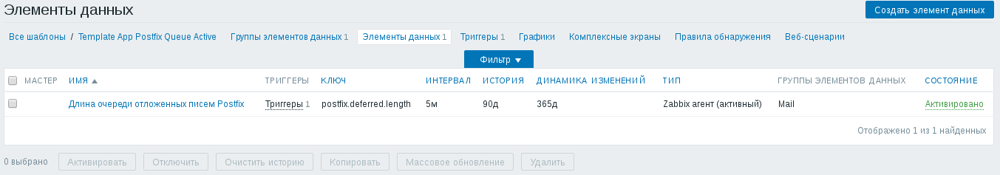
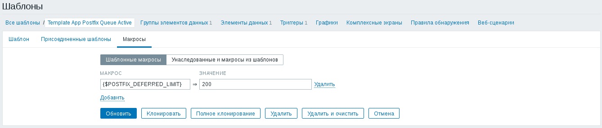
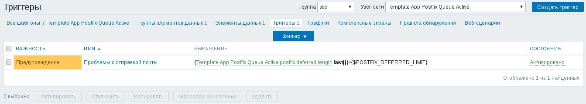
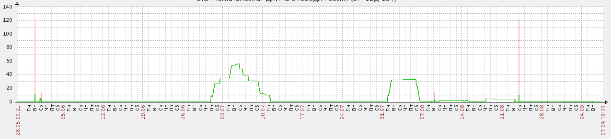

В прошлом я писал статьи о настройке Postfix для пересылки сообщений для администратора через полноценный почтовый сервер:
Когда таких серверов становится много, а некоторые из них рассылают большое количество писем, становится трудно своевременно обнаруживать проблемы с отправкой писем. Помочь в таком случае может система мониторинга. При проблемах с отправкой писем почтовый сервер откладывает проблемные письма в отдельную очередь, чтобы через некоторое время попробовать отправить эти письма снова. В Postfix эта очередь отложенных писем называется deferred. Для контроля количества писем в этой очереди нам понадобится настроенный Zabbix-агент и установленный пакет sudo. Настройку Zabbix-агента и установку sudo не описываю в виду их тривиальности.
При помощи команды visudo разрешим пользователям из группы zabbix выполнять от имени пользователя root команду поиска файлов в очереди Postfix:
%zabbix ALL=(ALL) NOPASSWD:/usr/bin/find /var/spool/postfix/deferred -type f
В файл конфигурации Zabbix-агента /etc/zabbix/zabbix_agentd.conf (или /usr/local/etc/zabbix24/zabbix_agentd.conf для случая FreeBSD с Zabbix-агентом версии 2.4) пропишем пользовательский параметр, который будет выполнять команду, подсчитывающую количество файлов, найденных в очереди отложенных писем Postfix:
UserParameter=postfix.deferred.length,sudo /usr/bin/find /var/spool/postfix/deferred -type f | wc -l
После внесения изменений в конфигурацию Zabbix-агента, не забудьте его перезапустить:
# /etc/init.d/zabbix-agent restart
В шаблоне есть:
Вот как выглядят соответствующие вкладки шаблона:
  Вот наиболее интересный фрагмент графика с одного из серверов:
Готовые шаблоны можно взять по ссылкам:
Ничего сложного или специфичного в этих шаблонах нет, поэтому и решил поделиться.